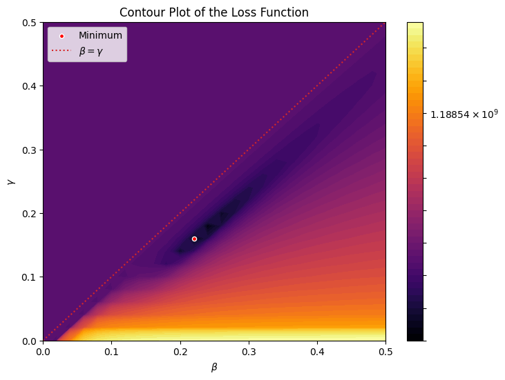

Now we will consider fitting a simple SIR model to a real infection curve using the techniques learned in the previous day’s materials. First, let’s import some real data from a csv and design our model.
Workshop Pacing
Day 3 is designed as short cycles:
Instructor explains the goal of one step.
Participants run the code.
Participants change one number or one graph.
The group discusses interpretation and classroom use.
The coding level varies, so the exercises emphasize where to edit, what changed, and what the graph means.
The following code cell will extract the CSV containing the CDC’s 2023-2024 influenza data. This dataset lists the total number of hospitalizations in Arizona for each day between 10/01/2023 and 04/27/2024.
import pandas as pdimport numpy as npfrom pathlib import Pathpossible_paths = [Path("AZ_DATA.csv"), Path("../AZ_DATA.csv")]data_path =next((p for p in possible_paths if p.exists()), None)if data_path isnotNone: data = pd.read_csv(data_path)else:# Synthetic fallback with the same column name used below. rng = np.random.default_rng(seed=2026) days = np.arange(210) dates = pd.date_range("2023-10-01", periods=len(days), freq="D") wave =20+260* np.exp(-((days -95) /38) **2) hosp = rng.poisson(wave).astype(int) data = pd.DataFrame({"date": dates.strftime("%Y-%m-%d"),"total_patients_hospitalized_confirmed_influenza": hosp })print("AZ_DATA.csv not found, so a synthetic Arizona-like hospitalization dataset was generated.")data.head()
What might make the real data different from a simple SIR model?
We can see that over the course of the year, Arizona’s hospitalizations followed a curve similar to our SIR model experiments. There are clear deviations, but the pattern of exponential growth and exponential decay is present.
To incorporate this data into our model we need to make a small modification. Note the structure of the SIR model,
\[
\begin{align*}
\frac{dS}{dt} &= -\frac{\beta S I}{N} \\
\frac{dI}{dt} &= \frac{\beta S I}{N} - \gamma I \\
\frac{dR}{dt} &= \gamma I. \\
\end{align*}
\]
We have compartments corresponding to Susceptible, Infected, and Recovered but our data is actually the number of people hospitalized. There are two common approaches to incorporating hospitalization into SIR type models. The first is to develop an SIRH model, which we discussed in the Day 2 notebook. The second approach, which we will take here is to assume a proportion of the infected compartment is hospitalized at any time. Then we introduce the scale parameter \(\rho\) to account for hospitalization. The full model is the SIR model together with
\[\begin{align*}
H = \rho I.
\end{align*}\]
Our model now three parameters to identify from the data, \(\beta\), \(\gamma\), and \(\rho\). Additionally, the number of infected individuals at time 0 is unknown and serves as another free parameter in the model.
Let’s now develop the loss function based on our discussion in the Day 2 notebook. We can express the loss function as follows
Where \(n = 1,\dots,N\) enumerates each day of real data. To simplify the estimation problem we will fix \(I_{0}\) and \(\rho\) to values obtained from numerical optimization, so we can perform a grid search over the loss function as in the previous notebook.
Let \(\rho = 0.0014\) and \(I_{0} = 3040\). The following code cell defines the model and the loss function.
def sir_rhs(X, params): S, I, R = X N = S + I + R beta, gamma = params dS =-beta * S * I / N dI = beta * S * I / N - gamma * I dR = gamma * Ireturn np.array([dS, dI, dR])def model(rhs, x0, ts, par): delta_t = ts[1] - ts[0] xs = np.zeros((len(ts), len(x0))) xs[0, :] = x0for t_index inrange(1, len(ts)): x_prev = xs[t_index -1] xs[t_index] = x_prev + delta_t * rhs(x_prev, par)return xsdef loss(par_prop, data): rho =0.0014 x0 = np.array([7_600_000.0, 3040.0, 0.0]) delta_t =0.1 ts = np.arange(0, len(data), delta_t) sol_prop = model(sir_rhs, x0, ts, par_prop)return np.sum((data - rho * sol_prop[:: int(1/ delta_t), 1]) **2)loss((0.3, 0.1), data_numpy)
np.float64(199386421.3734857)
Now we can perform the grid search and visualize our results.
spacing =0.02param_range = np.arange(0, 0.5+ spacing, spacing)B, G = np.meshgrid(param_range, param_range)loss_vals = np.zeros(B.shape)for i inrange(len(param_range)): for j inrange(len(param_range)): loss_vals[i, j] = loss((B[i, j], G[i, j]), data_numpy)flat_index = np.argmin(loss_vals)row, col = np.unravel_index(flat_index, loss_vals.shape)best_beta = B[row, col]best_gamma = G[row, col]min_loss = loss_vals[row, col]print(f"Minimum occurs at: β={best_beta:.4f}, γ={best_gamma:.4f} with value {min_loss:.4f}")
Minimum occurs at: β=0.2200, γ=0.1600 with value 906871.4024
from matplotlib.colors import LogNormplt.figure(figsize=(8, 6))plt.contourf(B, G, loss_vals, levels=np.logspace(np.log10(loss_vals.min()), np.log10(loss_vals.max()), 50), norm=LogNorm(), cmap='inferno')plt.colorbar()plt.scatter(best_beta, best_gamma, color='red', edgecolors='white', s=20, label='Minimum', zorder=100)plt.title("Contour Plot of the Loss Function")plt.plot(param_range,param_range,color ='tab:red',ls ='dotted',label ="$\\beta = \\gamma$")plt.xlabel(r"$\beta$")plt.ylabel(r"$\gamma$")plt.legend()plt.show()

Exercise 2: Loss Surface Interpretation
Core: Find the best beta and gamma printed above. What does each parameter mean?
Stretch: Look at the contour plot. Are there nearby parameter values with similar loss?
Teaching note: This is a good place to discuss that fitting a model does not mean the model is “true.”
# Optional: create a table of the ten best grid-search parameter pairs.flat_order = np.argsort(loss_vals.ravel())[:10]best_rows = []for idx in flat_order: row, col = np.unravel_index(idx, loss_vals.shape) best_rows.append({"beta": B[row, col],"gamma": G[row, col],"loss": loss_vals[row, col] })pd.DataFrame(best_rows)
beta
gamma
loss
0
0.22
0.16
9.068714e+05
1
0.24
0.18
1.107873e+06
2
0.26
0.20
1.776099e+06
3
0.20
0.14
1.817081e+06
4
0.26
0.18
2.592926e+06
5
0.28
0.22
2.611948e+06
6
0.24
0.16
2.850184e+06
7
0.28
0.20
3.003353e+06
8
0.30
0.24
3.474376e+06
9
0.30
0.22
3.679455e+06
Finally, let’s plot the solution of model with the optimal against the real data.
Core: Change proposal_scale from 0.001 to 0.0005 or 0.005. What happens to the acceptance rate?
Stretch: Change sigma. How does the spread of the samples change?
Classroom connection: This is an advanced example of uncertainty. For high school students, the key idea can be simplified to “many parameter values may explain the data nearly equally well.”
Final DataJam / Classroom Connection
In groups, choose one dataset or model from the workshop and prepare a 3-minute classroom adaptation.
Include:
The student-facing question.
The dataset or simulation.
One graph students will create.
One sentence students should write to interpret the result.
A low-code option for students who need more support.